11. Version Control System¶
Version control systems (VCS) are used to keep previous versions of your files, so that you can refer to them at any point in the future.
GPS provides integration with a number of such systems. It tries to provide a similar GUI interface for all of them, while preserving their specific vocabulary and features.
11.1. Setting up projects for version control¶
GPS does not come with any version control system. Instead, it expects that you already have such a system install on your machine. In some cases, it is able to automatically recognize them. In other cases, you will need to edit your project file as described below.
GPS has built in support for the following VCS systems:
None
Disables version control support in GPS:
project Default is package IDE is for VCS_Kind use "None"; end IDE; end Default;
Auto (default)
Let GPS guess the correct version control system:
project Default is package IDE is for VCS_Kind use "Auto"; end IDE; end Default;
CVS
The Concurrent Version System. To use this, you must have a patch tool, which usually comes with CVS. GPS is automatically able to recognize that your project is using this system, but looking for a
CVSdirectory in the root directory of your project. You can also force it by setting the following in your project:project Default is package IDE is for VCS_Kind use "CVS"; end IDE; end Default;
This can of course be done via the graphical project editor in GPS.
Subversion
The Subversion version control system. As for CVS, GPS will automatically recognize that your project is using subversion by looking for a
.svndirectory in the root directory of your project. You can also force it by setting the following in your project:project Default is package IDE is for VCS_Kind use "Subversion"; end IDE; end Default;
git
Distributed fast source code management. Again, GPS will automatically recognize this by looking for a
.gitdirectory in your project, but you can force this with:project Default is package IDE is for VCS_Kind use "git"; end IDE; end Default;
Previous versions of GPS supported a larger range of systems, but these have not been ported to the new code yet. Please let us know whether there is interest in doing so:
- ClearCase
- ClearCase Native
- Mercurial
Most of the version control code in GPS is generic, and customized for
each system via one small python plugin. As a result, it should be possible
to add support for other systems, by creating such plugins. Take a look
at the files in the directory prefix/share/gps/plug-ins/vcs2 in
your GPS install.
As mentioned before, GPS automatically attempts to guess the correct version system you are using. This is similar to having the following declaration in your project:
project Default is
package IDE is
for VCS_Kind use "auto";
end IDE;
end Default;
Note: you must be sure VCS commands can be launched without needing to enter a password.
In general, you will be have loaded one root project in GPS, but this is turn imports many other projects. Each of these can use its own version control system (so you can mix git and subversion for instance if your sources come from different places), or even the same system but for a different repository (so you could be cloning multiple git repositories).
If you have a setup with multiple systems, GPS will show special buttons in the local toolbars of the views to let you select which is the one to use for the operations (fetching the history, committing,...) These operations only apply to one system at a time, you cannot do a single commit with files that belong to multiple systems (although you can do a single commit for files that belong to multiple projects, provided these projects all use the same system and same repository).
11.2. Finding file status (Project view)¶
Most of the times, you will be using GPS on a project that already exists and for which version control has already been setup.
For such a project, the first task is to find out what is the status of the files, i.e. whether they are locally modified, up-to-date, whether you have created new files but not yet added them to version control, and so on.
To make this convenient, GPS displays this information in a number of places, via a small icon and appropriate tooltips.
The editor status bar
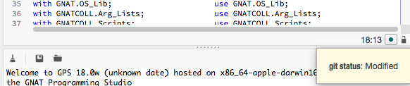Whenever you are editing a file, GPS displays a small icon in the status bar that indicates its current status as seen by GPS. If you hover the mouse, it will show a textual status. In this screenshot, the file has been modified locally, but not committed yet into the version control system (git in this case).
Clicking on this icon will change to the The VCS Perspective.
The Project view
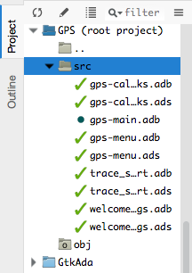The Project view is convenient to see all your source files, grouped by projects and optionally directories. GPS will show the same icon as the editor next to the name of each file, so that you can easily see their status. Again, the tooltip would show the textual status.
The Files view
This view is similar to the Project view, but groups files as they are organized on the disk. GPS will try to guess the best system here, but there might be ambiguities when the same directory is shared among multiple projects which use a different VCS system or repository. We do not recommend this setup.
11.3. The VCS Perspective¶
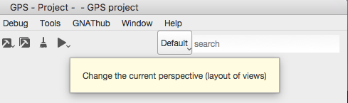To display all pertinent information on your files, GPS uses multiple views, as described below. Although you can open any of them whenever you want, via the or menus, the most convenient is to select the VCS perspective.
This perspective was created to show all VCS related views, and hide unrelated views. As for all GPS perspectives, you can modify the way it looks, which views are displayed,... simply by opening new views or moving them around while this perspective is selected.
See also Perspectives for more information on how to manipulate them.
There are multiple ways to switch to this VCS perspective: as always, you can use the toolbar’s perspective selector, or the menu. The most convenient might be to click on the VCS status icon at the bottom of each editor.
In all of these cases, GPS will change which windows are displayed on the screen. It will preserve your editors, but close all other views, and instead show the following:
- The Project view, used to check the status of all files
- The Commits view (The Commits view), used to select which files should be committed, and do the actual commit
- The History view (The History view), to view all past commits
- The Branches view (The Branches view), to view various pieces of information about your repository, depending on which system you use.
11.4. The Commits view¶
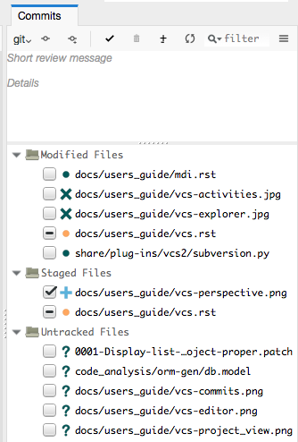The purpose of this view is to let you prepare and then commit your files.
11.4.1. Viewing modified files¶
The view lists all files in your project, to the exception of up-to-date files (i.e. those files that have been checked out, and never touched locally), and ignored files (i.e. those files for which you have explicitly told the VCS that you will never want to commit them).
By default, they are organized into three sections:
Staged files
These files will be part of the next commit (see below)
Modified but unstaged files
These are locally modified files, which will not be part of the next commit, unless you stage them.
It is possible for a file to be in both groups (on the screenshot, this is the case for
vcs.rst), when it had been modified, then staged, then further modified. If you are using git, the later modification have not been staged for commit, and git will only commit the first set of changes. Other systems like CVS and Subversion will always apply all current change to the file, no matter whether they were done before or after the staging operation.Untracked files
These are files found in your directory, but that are unknown to the VCS. Sometimes these files should simply be ignored and never committed, but sometimes they will be newly created files that you should stage to include them in the next commit.
Various local configurations can be selected to change what is displayed in this view, take a look at the menu and the tooltips.
11.4.2. Committing files¶
Committing is always a three step process in GPS (this is exactly what git does natively, but also provides more flexibility for over systems).
First, you need to select which files will be part of the next commit. It is possible that you have been modifying unrelated source files, which you do not want to commit yet.
This is called staging the files, and can be performed simply by clicking in the checkbox next to the file’s name, or by selecting multiple files at once and then clicking on the “stage” toolbar button.
Staging files can be done at any point in time, not necessarily just before you commit. You can also stage files, exit GPS then restart, and GPS will remember which files had been staged.
The second step is to provide a commit message. GPS will not let you do a commit without an actual message (most VCS systems don’t either). You can enter any message in the editor at the top of the Commits view.
With git, the standard is to have one single short line first then an empty line, then a more extensive message. We recommend similar approaches for other systems. That first line is the one that will be displayed in the History (The History view).
Just like for staging files, you can edit this message at any point in time, so it is a useful way to explain your changes as you do them, even if you intend to do further changes before the actual commit.
Finally, you just press the Commit button in the local toolbar. GPS will ask the VCS to do the actual commit, and then will refresh all views. All files that were modified and staged before are shown as no longer modified, for instance.
11.4.3. Actions in the Commits view¶
Double-clicking on a file will open an editor for that file.
Clicking and keeping the mouse pressed on a file will open a Diff view showing the current changes to the file.
11.4.4. The Commits view local toolbar¶
The commits view contains a number of buttons in its toolbar. The exact set of buttons will depend on which VCS you are using, but here is some buttons that will be useful in a lot of cases:
On the left of the toolbar is a button to select the current VCS system, in case your projects uses multiple such systems, or multiple repositories with the same system. The commit and staging will always be done for the current system only.
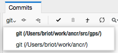This button is hidden if you are using a single VCS system for all your projects.
A button is provided to undo all local changes.
After confirmation, GPS will revert to the last commit, and cancel all changes you might have done locally. This works for all supported VCS.
A button to refresh the contents of all VCS views
This button is not needed if you do all operations from GPS, including editing files. But if you do operations outside of GPS’s control, you will need to manually resynchronize the views with what’s really in your VCS.
11.5. The History view¶
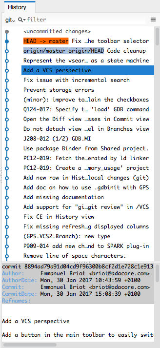The purpose of this view is to show all past changes that you have done with your VCS.
This view is divided into three parts:
11.5.1. List of all past commits¶
For each commit, GPS displays the first line of the commit message. Optionally, you can configure the view to also show the author, the date, and the unique identifier for these commits.
Depending on the VCS in use, GPS will also show the name of the branches associated with these commits, as well as specific tag names that might have been set.
In particular, git shows the contents of all active branches, so the history is not so linear, and there is a wealth of information to show how the branches were split and joined in the past.
When this is too much information, you can use the local configuration menu to only show the details for the current branch.
A special line (added at the top in the screenshot above) is displayed in gray when there are local uncommitted changes in your working directory.
By default, GPS only shows the first 2000 commits. If you want to see more, scroll to the bottom and click on the Show more buttons to download more entries.
11.5.2. Graph of past history¶
Next to the list of commits is a graph showing their relationships. Most of the times, this history is fairly linear, with each commit having one parent commit, and followed by another commit.
But with some VCS like git, people might choose to use a lot more branches. They create a new branch to work on a specific feature, then merge it into the master branch when the feature is completed. It can become harder to follow the history in such a case.
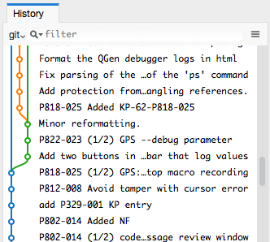In this case, the graph becomes more useful, as shown in the screenshot above.
But using the local configuration menu, you can also choose to only show commits that are related to branches (either because they are the beginning of a branch, or because they are a merge of two branches, or because they have a special name (tag or branch name) associated with them. All commits with a single parent and single child are hidden.
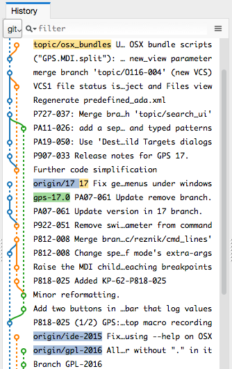When you are using git, commits that have not yet been pushed to the remote branch will be displayed with a filled circle to help you find out whether you need to push.
11.5.3. Details on selected commits¶
Whenever you select one or more commits, GPS will download their details and show those at the bottom of the Commits view.
These details are those provided by the VCS, and generally include the author and date of the commit, as well as the full commit message and diff of what changes were made.
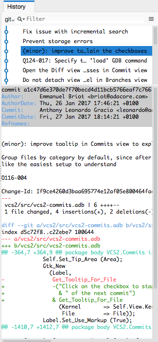The diff is syntax highlighted to make it more readable.
11.6. The Branches view¶
The purpose of this view is to display various pieces of information that are specific to each VCS.
Most notably, it will let you interact with branches.
Various actions are possible in this view, all of which depends on the VCS and which specific section of the view you interact with. Please check the tooltips that are shown when you leave the mouse over a line for a brief while to see what actions are possible. The actions are done via one of the following means:
- double-clicking on a line. This is the same as using the corresponding toolbar button.
- a long click on a line (click and then leave the mouse pressed for a short while). This is the same as using the rename toolbar button.
- clicking on the [+] button in the toolbar.
- clicking on the [-] button in the toolbar.
11.6.1. Git and the Branches view¶
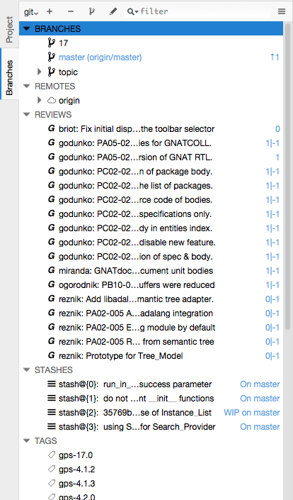The screenshot above is for git. In this case, GPS displays the following pieces of information:
List of local branches
For each branch, GPS displays the number of commits that have not yet been pushed to the remote branch, and conversely the number of changes that have been made in the remote branch but not yet applied to the local branch.
Double-clicking on any of them will check it out and make it the current branch. If you have locally modified files at that time, git might refuse to do the checkout, and the error message will be displayed in GPS’s Messages view.
A long click on any of the branch names will let you rename the branch.
A click on [+] will create a new branch, starting from the selected one.
A click on [-] will remove the selected branch if it is not the current one.
List of remote branches
These are the branches that exist in the git repository, that you can checkout locally by double-clicking on them. The branches are grouped by the name of the remote repository that contains this branch, since git is a distributed system.
You can also delete a remote branch by clicking on [-].
List of Gerrit reviews
If you are doing code reviews via Gerrit, GPS is able to download the list of patches pending review, as well as their current scores.
Double-clicking on any of the patch will open the Gerrit page in a web browser.
Clicking on [+] will cherry pick the patch and apply it to the local working directory.
If you are not using Gerrit, this category will not be displayed.
List of stashes
In git, stashes are a way to temporary move away local changes to get back to a pristine working directory, without losing your current work.
GPS displays the list of all stashes, and lets you create new stashes by clicking on [+] when the STASHES line is selected.
Clicking on [-] will drop the selected stash, and you will lose the corresponding changes.
Double-clicking on a stash will reapply it to the current working directory. It will not drop it though, so that you can also apply it to another branch.
List of tags
All tags that have been applied in your repository are also listed. You can create new tags by selecting the TAGS line and clicking on [+] line.
You can remove tags by clicking on [-].
11.6.2. CVS and the Branches view¶
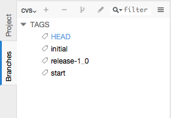The screenshot above is for CVS. GPS displays far fewer information than for git, and only shows the tags.
Double-clicking on any of the tag will check it out in the working directory.
Clicking on [-] deletes the selected tag.
Clicking on [+] while the TAGS line is selected will create a new tag.
11.6.3. Subversion and the Branches view¶
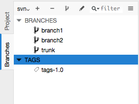GPS assumes a standard organization of the subversion repository, namely that there are three top-level directories:
<repository>/trunk/project/
<repository>/tags/project/
<repository>/branches/project/
If this is the organization you are also using, GPS is able to show the list of tags and branches in the Branches view.
You can checkout a specific tag or branch by double-clicking on it.
11.7. The Diff View¶
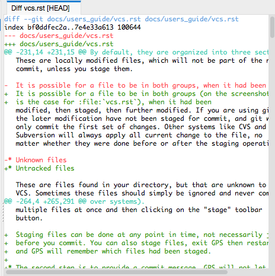This view shows a simple color highlighted diff. The screenshot shows the changes currently done to this document...)
This view is opened either by long clicking on a file name in the Commits view (The Commits view), or by selecting the menu .